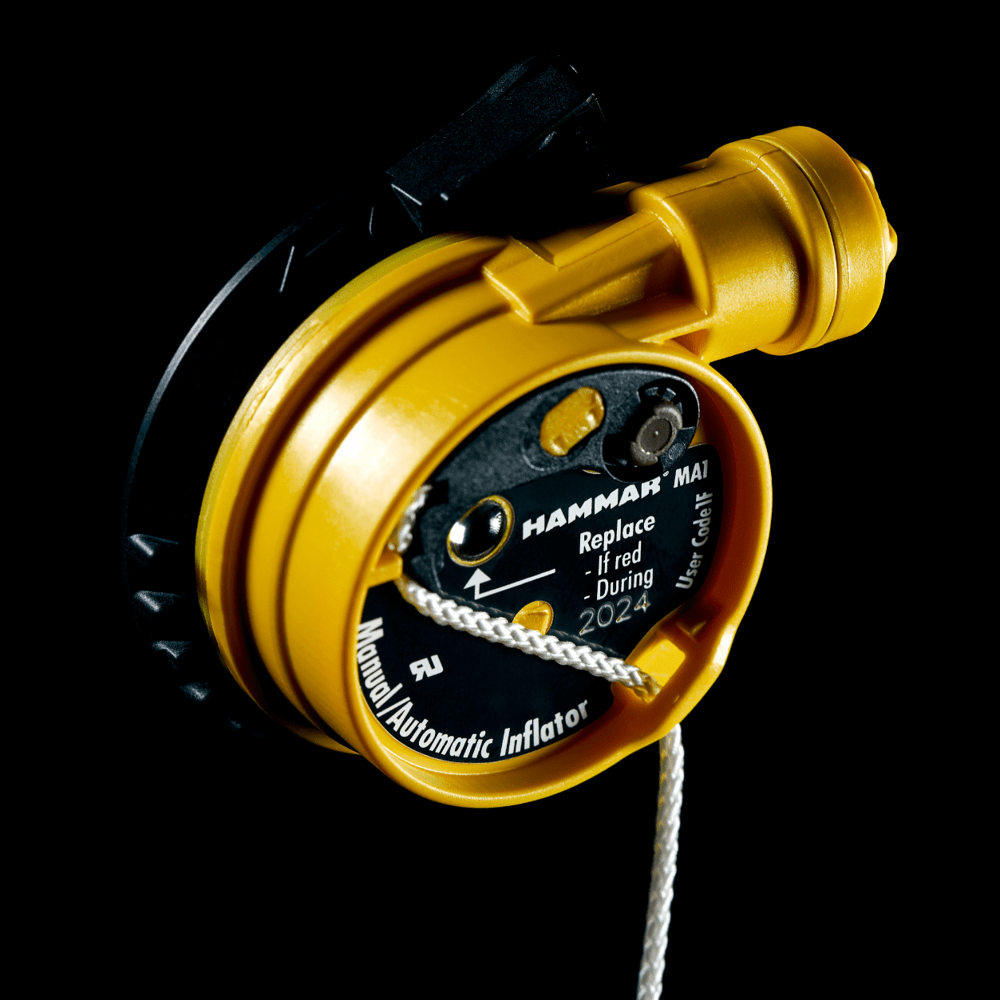
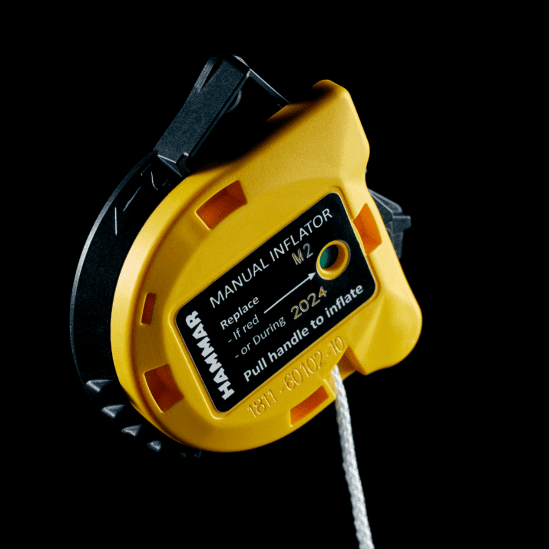
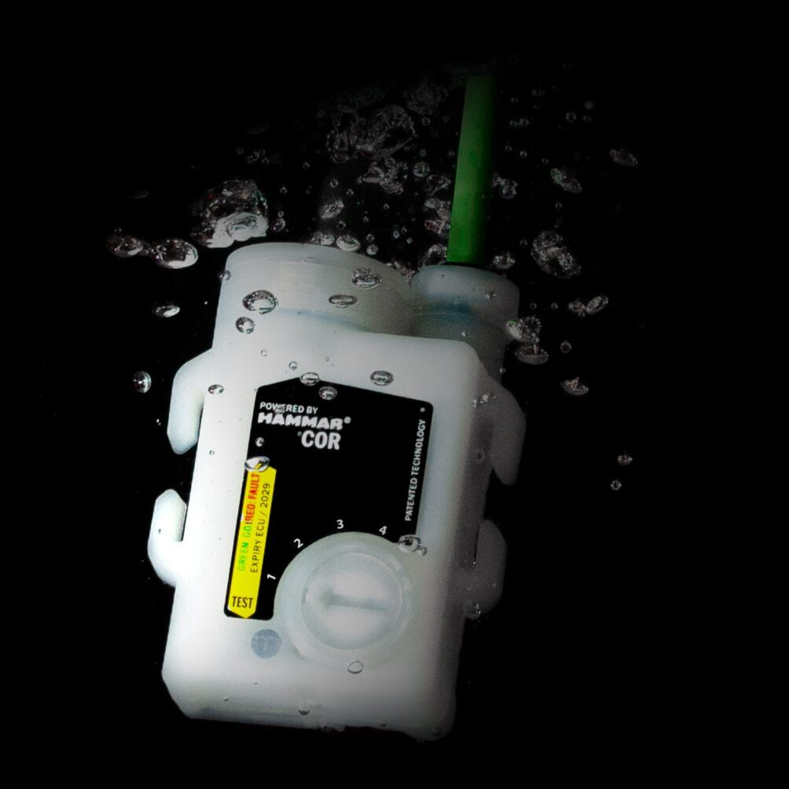
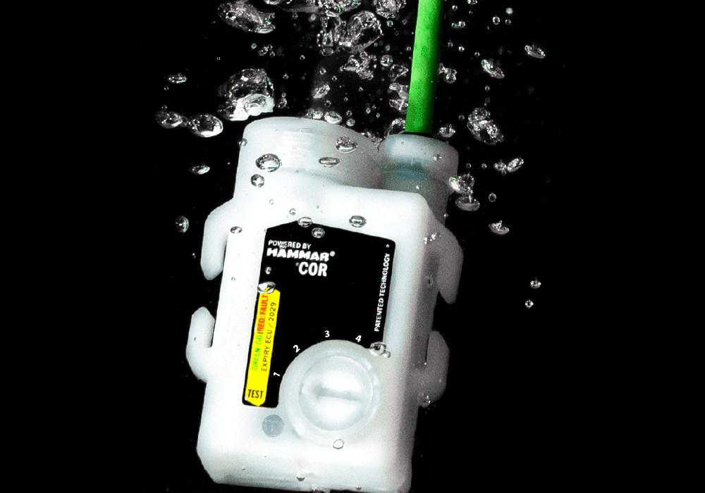
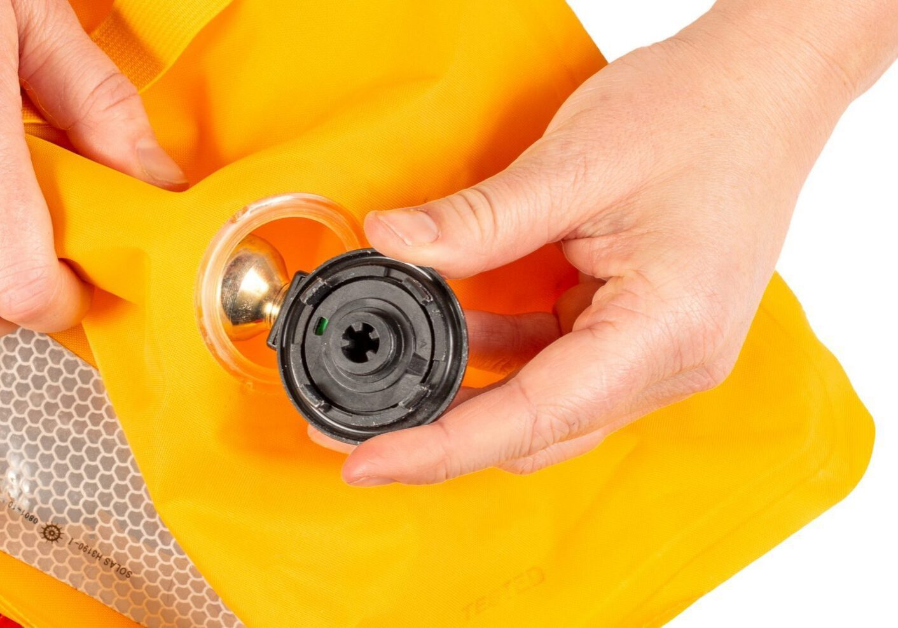

OPTIMIZED FOR ROUGH CONDITIONS
Despite its small size, the inflator is of huge importance for your lifejacket's performance. The inflator's mission is to give your lifejacket full buoyancy when you need it.
Hammar's Lifejacket Inflators are designed to activate only when needed and prevent accidental activations. Whether activated automatically or manually, we believe an inflator optimized for rough conditions is a Better Solution for Safety at Sea.
WHAT IS AN INFLATABLE LIFEJACKET?
Lifejackets have saved lives at sea for decades by giving a person in the water the extra buoyancy to stay afloat. You may either wear a lifejacket where the needed displacement element is at all-time present. Or, you may have a lifejacket that creates extra buoyancy by inflating a bladder using compressed gas, a so called inflatable lifejacket.
The inflator initiates the release of compressed gas, either automatically in water or manually, by pulling a handle. Inflatable lifejackets are the primary choice for users requiring better mobility and high flotation due to worn gear and the state of the sea.
Inflatable lifejackets are considered personal safety equipment and should be serviced and controlled regularly.
WHAT DOES AN INFLATOR DO?
The inflator is where the energy for puncturing the gas cylinder is stored or generated. An automatic inflator will commonly store the energy needed in a spring under tension held by a water-sensitive element. The element will break at entry into the water, releasing the spring connected to a pin, piercing the cylinder, and releasing gas into the bladder. The bladder increases in volume and creates buoyancy. A manual activation either releases the energy or generates the force needed to puncture the cylinder with the pull of the handle.
TECHNOLOGIES

AUTOMATIC ACTIVATION WITH HYDROSTATIC TECHNOLOGY
Hammar's Lifejacket Inflators are equipped with hydrostatic protection and use a valve to protect the water-sensitive element that gives exceptional protection against accidental inflation in the case of rain, spray, splash, or humidity. When the inflators are exposed to sufficient pressure, they will open their hydrostatic valve, allowing the water to meet the water-sensitive element and start the activation.



MANUAL ACTIVATION
Activate the inflator manually by using the pull-tab, and the lifejacket will reach full buoyancy within seconds. The manual pull creates the necessary force to make the piercing pin puncture the cylinder and return to its original position for a free gas flow into the bladder. The inflator is designed to ensure fast and reliable activation when you need it. You should don the lifejacket according to the manufacturer's instructions to secure the lifejacket's function.



PRECISION AND CONTROL USING ELECTRONIC CONTROL UNIT
The Hammar COR Electronic Inflator System is a new patented technology. It can be customized to specific requirements and optimized for different applications. The technology creates a rapid and reliable activation of the PFD (Personal Flotation Devices) even under extreme conditions.
HYDROSTATIC TECHNOLOGY
Hammar's Lifejacket Inflators are equipped with a hydrostatic valve that gives exceptional protection against accidental inflation in the case of rain, spray, splash, or humidity. When the inflator is exposed to sufficient differential pressure, the hydrostatic valve will open, allowing the water to meet the water-sensitive element and start the activation.
It is important to don the lifejacket according to the manufacturer's instructions to secure the function of the lifejacket and automatic inflation.


5 year lifetime
The Hammar Lifejacket Inflator needs no service or maintenance. Just make sure to replace the inflator after the five-year expiry date or when the single point indicator is red.
Protected cylinder seal
The gas cylinder is placed inside the inflatable bladder and therefore protected from the atmosphere and corrosive effects of saltwater, and reduces snagging hazards. The cylinder is permanently fixed to the piercing unit, making it impossible to unwind the cylinder.
Humidity resistance
The Hammar Lifejacket Inflator is equipped with a hydrostatic valve that gives exceptional protection against accidental inflation in the case of humidity. The inflator passes the highest standard in a humid atmosphere when tested by the USCG.
Rain & wave resistance
The Hammar Lifejacket Inflator is equipped with a hydrostatic valve that gives exceptional protection against accidental inflation in the case of rain, spray, and splash.
Single point indication
You will find all information needed to determine your inflator's status, single point indication, and expiry date close together. When the single point indicator is green, the inflator is ready for use. After activation (automatic or manual), the indicator turns red, and the inflator needs to be replaced.
Low temperature
The Hammar Inflator Systems are suitable to operate in cold conditions due to the cylinder location inside the bladder, and moisture cannot get in to form ice. Furthermore, the CO2 does not have to enter through a valve to inflate the lifejacket. This minimizes the risk of icing during inflation.

COR TECHNOLOGY
The patented Hammar COR technology uses an electric signal to ignite a small explosive charge to give the lifejacket full buoyancy when the activation conditions are met.
The small charge makes an efficient piercing in the cylinder with little gas restrictions, which increases the flow of gas to the buoyancy chamber. The method also provides superior reliability in cold condition inflations and minimizes the risk of icing.
The parameters for activation are predefined and customized to meet the users' demands. Hammar's ECU (Electronic Control Unit) can be programmed with up to seven operating modes.
Hammar COR technology, used in other applications.


ONE SOLUTION INTERFACE
The Hammar Lifejacket Inflators integrate with the lifejacket bladder through the sealing ring. Depending on the approval and certification of the lifejacket, the inflator is fully interchangeable with electronic, automatic, or manual inflators. The actual activating mechanism consists of two parts:


{kind=link}
{kind=link}

THE WORLDS LEADING LIFEJACKET MANUFACTURERS USE HAMMAR
HOW DO I REARM MY HAMMAR INFLATOR?
If your indicator is red or the year marked on the inflator has passed, you need to rearm your lifejacket. For instructions on how to replace the inflator, please watch the video.
{kind=link}
FREQUENTLY ASKED QUESTIONS
CAN´T FIND YOUR ANSWER?
Showroom for lifejackets
Find the lifejackets with the Hammar system